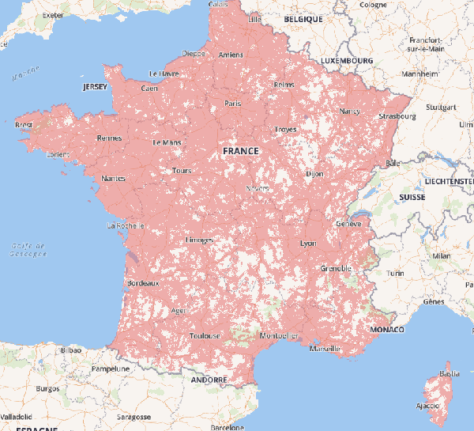
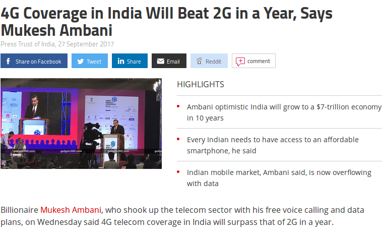

By facilitating access to digital solutions, the number of mobile application users will increase significantly. Mechanically the rate of commitment related to the service offered will also increase. This metric is essential to an application’s success. Without accessibility, the risk that users don’t use the service is high. And if the engagement rate is low, the revenue from the application could be heavily impacted.
The success and adherence of an application are too often reduced to ASO (App Store Optimization) or SEO (Search Engine Optimization). If the application is well ranked, then users will be at the rendezvous.
But the performance criterion is actually only very little taken into account by the applications. Indeed, we consider that all users have a fast connection and a high-end smartphone. But it’s totally wrong.
Why do we have this feeling of speed and access by all?
Operator communications are numerous on the speed and the good coverage of the network. For instance, operators advertise 98% coverage of the population for 4G. This is for them an differentiation asset.

And new technologies announcements reinforce the idea that current technologies are widely deployed. 5G communications make indeed the 4G thing outdated. This is the case of Xiaomi who recently unveiled the first 5G smartphone.
Moreover, the current technologies deployment seems to have no limit: 4G is on the moon
The feeling of connection speed is also due to the fact that decision makers and application designers are in perfect connection conditions zones (urban areas, premises with fiber connection…). The used analytics tools at the application editors don’t help. Indeed, how to know that a user exists if he doesn’t connect … The abundance of data makes the analysis of connection problems too difficult to achieve.
What is really on the side of the users?
The ARCEP reports since 2000 a digital barometer that counts the figures of the true use of the mobile in France. Its 2018 edition presents the following observations:
- 61% of mobile owners use 4G networks (compared to 42% in 2016)
- This figure drops to 51% in municipalities with less than 2000 inhabitants.
We can notice that we are still far from the promise of 100% coverage.
And this is confirmed by OpenSignal which realizes real measurements through user tests.

According to the measures, France has a coverage rate of 68%. Interestingly, the average connection speed at 25 Mbps is not among the best. This raises an important factor to take into account: the quality of the infrastructure (Operators, antennas …). The countries, the different areas even within the same city have inequalities in terms of coverage 4G:
For example, here is the network coverage map of downtown Nantes (France, 44):

We notice that there are very few areas in dark green (color meaning good network coverage) and many areas in red (bad coverage).
In the end, network coverage and user speed is very variable. This is the same observation both locally and globally. Overall, users are unsatisfied with the 4G connection.
The deployment of technologies is accelerating so everything will be back to normal?
The belief in the evolution of technologies could make us believe that this situation is cyclical and that everything will soon return to order. This is the reassuring message from the operators, not only in France but also in countries that seem less advanced in terms of deployment.

It’s also the message of the politicians who announce the high speed of connection accessible to all. However it’s only a strategy and empty promises. The reality is much more complex.
On the one hand, we can see it even if new technologies are deployed, access for all may take longer. Many users are still in 2G. And this for many reasons. 100% coverage is impossible as we have observed but also some areas will always be white. The new buildings built with full metal are Faraday cages that block the waves and make access to networks complicated. This is only an example but we could mention a multitude of similar situations.
And even if you get 100% coverage, users’ equipment should follow closer. It would be necessary to be equipped with the latest generation of smartphones. And this isn’t necessarily the willingness of users to change as often. In any case, repackaging tends to maintain older generation equipment on the market. 1 in 3 French people say they have bought a used phone. But there is only a little luck that these phones integrate the 5G quickly.
The promises of new technologies are also often overestimated. The arrival of the 5G is associated with more speed. This isn’t that simple. The 5G will allow new uses (that of the IoT for example) and decongest the 4G network… In other words, if you expect to reach all mobile users, you must rely on the fact that a large part of them won’t in perfect connection conditions.
What impact on the business of your application or that of your services?
The use of mobile in different areas has become widespread. For example, that of M-Commerce, according to the french ARCEP study, 61% of mobile users make purchases with their smartphone. It’s basically the same statistics in other countries. In England, it’s 41%. The income of an application is generated and based on the number of users. But if the user has a bad experience or even if he can’t go after his desire to buy because of bad experience, the income will not be at the rendez-vous.
Lack of performance is one of the criteria for user disengagement. As we have seen, a large part of your users will be in non-optimal connection conditions. In this case, the application will probably be less responsive or unusable in some cases. For reference, we have measured with our tool GREENSPECTOR loading times of up to 4 minutes for some applications in 2G. In the end, the risk that the user uninstalls the application is high. In addition, the uninstall rate at 30 days is 28%. It’s even more important in some countries, such as developing countries, for reasons of space and heaviness. In this case, connection problems are very important for membership. This matches the observed data on the web performance side where 53% of visitors leave the site if it doesn’t load in less than 3 seconds (Chrome Dev Summit 2017).
Impacts other than economic ones?
If your application isn’t functional for slow connections, some users will not be able to use your services. You will therefore exclude users. And this exclusion doesn’t go in the direction of the social pillar of sustainable development which, among other things, requires the inclusion of all populations.
In the same way, if your application works poorly with slower networks, it will consume more battery. And here is the environmental pillar that you will not respect.
How to act?
Don’t wait for feedback from your users or those of your monitoring tools to act. A user who cann’t connect to your application may not be visible or reassembled in your data. It’s therefore necessary to anticipate and detect potential performance issues.
- 1) When designing and expressing the requirement, ask and specify that your solution is usable is visible under limited connection conditions. This can simply be summarized as « my application, or such function, can load in less than 3s on a 2G connection »
- 2) It’s necessary to test your solution in limited connections (2G, 3G …) automatically or manually.
- 3) You can monitor user performance through monitoring tools. Be careful however because it’s very possible that many users aren’t visible at all from these tools.
Solutions 1 and 2 are the solutions we advocate and use at GREENSPECTOR. Solution 3 is possible with GREENSPECTOR by measuring the solution immediately after going into production.